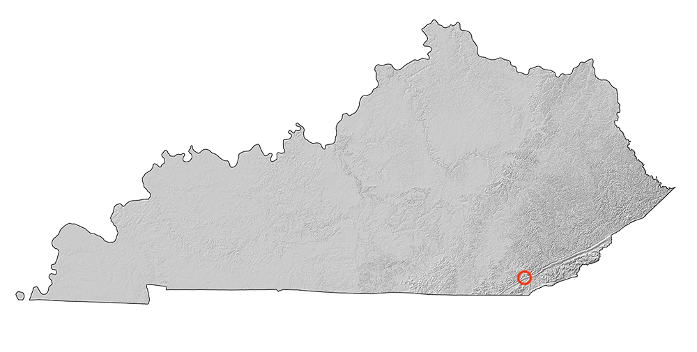
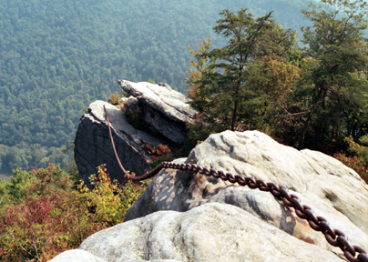

Pine Mountain State Resort Park
Authored by: Victorene Frimpong
The area of intrest is Pine Mountain State Resort Park in Bell County. It was Kentucky's first state park. Pine mountain runs through Virginia, Kentucky and Tennessee.
Some notable destinations include cumberland Falls State Resort Park.
This project aims to highlight features at Pine Mountain Park. The goal is to create an intresting 3d visualization and analyze the above ground features.
A locator map
Hillshade of Kentucky
Interactive Map
Potree Point Cloud Render. Full Screen version
Images and photos
View of Chain Rock. Photo by Woody and Mike.

View of Laurel Cove Amphitheatre. Photo by Angela King-Belleville.
Slideshow
Map details
Source and tools used: Elevation data was from Kentucky's Elevation Data & Aerial Photography Program (KyFromAbove.ky.gov). Color aerial imagery was from the National Agriculture Imagery Program (NAIP). ArcGIS Pro for porcessing lidar and elevation data. Mapbox for map above Ceisum for map slide show Phython in Jupyter Notebook Pine Mountain info: (https://parks.ky.gov/pineville/parks/resort/pine-mountain-state-resort-park)
University of Kentucky GEO 409, Spring 2021.- My Bluegrass maps
- Visit @vfrimpong
- UKy GIS and Mapping